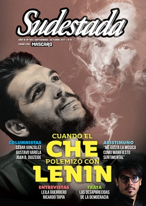

Buscar
Una polìtica sin afuera
Una política sin afuera es una política de cuerpo excluido. No una entelequia. Una puesta en escena. Una política de tela de araña, frágil a primera vista, pero resistente al viento, a la lluvia, al granizo, capaz de atrapar a uno, a otro y otro. Cambiemos es una política sin afuera. La tela de araña es un sistema conceptual tejido sobre la superficie. No hace falta más.
Edición N° 149
Septiembre-octubre 2017
Revista bimensual
Comprar edición impresaSumario
- Cuando el Che polemizó con Lenin
- ¿Dónde está Santiago?
- "Me gusta la música como manifiesto sentimental"
- Mensajes en las paredes del tiempo
- Trata. La desaparecidas de la democracia
- La vida del miedo
- Una polìtica sin afuera
- “Lo colectivo lo fuimos aprendiendo todos en estos años”
- Pergamino en llamas
- "Un periodista sin calle está desnutrido de experiencia"
- La amenaza mapuche
Compartir Articulo
Una política sin afuera es una política de cuerpo excluido. No una entelequia. Una puesta en escena. Una política de tela de araña, frágil a primera vista, pero resistente al viento, a la lluvia, al granizo, capaz de atrapar a uno, a otro y otro. Cambiemos es una política sin afuera. La tela de araña es un sistema conceptual tejido sobre la superficie. No hace falta más. La construcción de un sistema conceptual cerrado y de superficie es un sistema resistente. Con eso alcanza, no hace falta el afuera.
Una puesta en escena (una política de tela de araña) es una red, hecha con nudos de conceptos anhelados: felicidad, cambio, no volvamos para atrás, sí se puede, vivir mejor, todos los argentinos, equipo, en todo estás vos, vecino. Todos estos conceptos son un sistema cerrado, se definen unos con otros. Felicidad es el cambio; no volvamos para atrás es lo que el vecino quiere; el vecino es todos los argentinos que quieren la felicidad. El equipo es todos juntos, se puede, vecino y vecino, los argentinos, la felicidad. La rueda gira sobre sí misma. Hay una red de conceptos que forman un sistema, y ese sistema es la construcción de una verdad sin afuera (a esto llaman posverdad). Una pura tautología, un espejo, una tela de arañas de la que no es posible salir.
No hay afuera. Es la política puertas adentro, una política autorreferida con efectos diluyentes. Sus acólitos defienden el adentro. Cualquier expresión del afuera, cualquier discrepancia política es un absurdo, molesta, está fuera de lugar. Es puro exceso. Ante este conjunto de conceptos, hablar, decir, opinar, enfrentar, es un exceso que atenta contra un "nosotros" permanente. ¿Quién no quiere la felicidad para los vecinos que son todos los argentinos, que buscan un cambio, porque sí se puede, si estamos en equipo todos nosotros? Tautología, política de tela de araña: ("mi peor defecto es mi honestidad" no tiene afuera). ¿Cuántos conceptos tiene el sistema Cambiemos? Evidentemente muchos más de los que vemos y todos los que vemos: Macri tomando mate o abrazando a un pobre es un concepto, no una realidad. Los besos al aire de María Eugenia Vidal son un concepto, no una realidad. "Nosotros", "en todo estás vos" son una puesta en escena, no una forma de inclusión.
La cara de María Eugenia Vidal también es un concepto: su gesto es muy eficaz para la incorporación al sistema cerrado. Toda ella es el vecino, toda ella es el sí se puede, toda ella es el "en cada rincón estoy con vos". Es una reificación del concepto, una puesta en acto. En ella, en las señas de su cara, en su tono de voz, los conceptos se hacen visibles. Son una puerta abierta a la política como encierro.
Una política sin afuera requiere de un sistema de captura almibarado. Vidal es sedosa, envolvente, casi etérea. Ideal para la captura. Convierte el afuera en una situación sensible: la lucha contra el narcotráfico está incorporada, no como problema, sino como una puesta en escena; es el "sacrificio" de tener que "soportar" su hogar en una base militar.
Vidal es la Mujer Pro, la Mujer candidata. No necesita casi de nada. Su apariencia piadosa y su derrame Pan Triste, son más eficaces que todo Durán Barba. No le teme ni a Macri ni a Carrió.
Vidal y Carrió se repelen porque son lo mismo: las dos son bastardas en un mundo de aristócratas. Ninguna de ellas es de clase; ninguna creció con todo resuelto. Las dos son religiosas. Carrió con cuerpo de cura obeso e impunidad de fanático; Vidal como una beata devocional. (Las tres mujeres Cambiemos son religiosas, también Michetti, aunque desplazada por el pecado de gula 2015 "CABA es sólo mía".)
Lo que más enfada de esta política sin afuera es la imposibilidad de la discusión. Contra el pensamiento crítico, los talleres de entusiasmo de Alejandro R. El macrismo es un diluyente para cualquier argumento. La tela de araña, la atracción que generan sus conceptos, silencia a la voz más potente y a la más entrenada. Se los lleva puestos. Porque no hay una realidad por detrás sino un discurso autorreferencial. Hay cierre. En esta puesta en escena, el pobre es pobreza cero, el jubilado es el abuelo beneficiario de una reparación histórica, los despedidos son futuros emprendedores, lo que es discusión debería ser diálogo. Si no hay pobreza cero, si no hay reparación, si no hay emprendimiento, si no hay diálogo, ¿qué hay? ¿Nos mintieron?...
(La nota completa en la edición gráfica de Sudestada... ¿Por qué publicamos apenas un fragmento de cada artículo? Porque la subsistencia de Sudestada depende en un 100 por ciento de la venta y de la confianza con sus lectores, no recibimos subsidios ni pauta alguna, de modo que la venta directa garantiza que nuestra publicación siga en las calles. Gracias por comprender)
Comentarios
Gustavo Varela
Articulos más vistos


LIBRERÍA SUDESTADA

Colección infantil

Distribuidora de Libros

Suscripción

Sudestada en URUGUAY

Otros articulos de esta edición
 Nota de tapa
Nota de tapa
Cuando el Che polemizó con Lenin
Durante su etapa al frente del destino económico cubano, como ministro de Industrias, Ernesto Guevara se preocupó por formarse al ...
 Entrevista con Lisandro Aristimuño
Entrevista con Lisandro Aristimuño
"Me gusta la música como manifiesto sentimental"
Un gran desafío espera a Lisandro Aristimuño. Cada vez más convocante, el patagónico legitimado como un compositor y autor clave ...
 Género
Género
Trata. La desaparecidas de la democracia
Una mujer desaparece en la Argentina cada 62 horas, según la Procuraduría de Trata y Explotación de Personas (PROTEX). En ...
 El ojo blindado
El ojo blindado
La vida del miedo
 Entrevista con Ricardo Tapia
Entrevista con Ricardo Tapia
“Lo colectivo lo fuimos aprendiendo todos en estos años”
Con casi treinta años sobre los escenarios y un disco nuevo en la calle (Criollo), Ricardo Tapia, cantante y compositor ...
 Tierra Adentro
Tierra Adentro
La amenaza mapuche
Detrás de una campaña típica de demonización por parte del gobierno de turno, se oculta una trama compleja. ¿Qué se ...